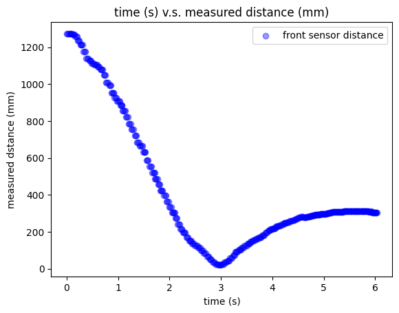

The purpose of this lab is to get experience with PID control: I am going to implement PID control in my robot to finish the position control task. Basically the idea of this task is to have my robot drive as fast as possible towards the wall and stop when it is exactly 1 foot (304 mm) away from the wall using feedback from the ToF distance sensor. The PID controller in this task will be controlling the speed of my robot by considering the distance between my robot and the wall.
Prelab
BLE Debug System
Before applying the PID controller to my robot, since the robot needs to be placed on the ground to conduct testing, there will not be any cable available to connect the robot to my computer so that to use Serial.print to print out distance sensor readings and any other information for debug usage. Therefore, it is essential to design a system that helps to debug my implementation by plotting out the distance output by front ToF sensor and the PWM output controlled by my PID controller, so that I can adjust PID controller parameters effectively.
A good techinique is to send commands to my robot over bluetooth, executing designed PID control for a fixed amount of time (5s for example) and collect the data including distances read from the front sensor and PWM output from Artemis, and send the data back with timestamps to computer via BLE, so that I can plot the data to have a look.
In practical, I design my debug systems as follows:
1. Computer: a callback function PID_debug is defined to receive and store string messages sent from robot which contain timestamped front sensor readings and Motor input from Artemis (processed PWM duty cycle percentage).

2. Computer -> Robot: after connecting Artemis with laptop, a defined function PID_control on Artemis side is called with parameter (Kp, Ki, Kd) setting of PID control from computer side via bluetooth to start the PID control task (position control task). It needs to be noticed that to avoid exceeding storage space of Artemis while preventing significant delay during the task, I decide to create three int arrays in Artemis side to store timestamps, distance readings from front ToF sensor and PWM duty cycle percentage processed by real time PID control. After the task is finished, the data in the arrays are then transmitted to computer side using a for loop, where each loop only one data from each array are extracted into a string and transmitted so that to prevent transmission memory overflow.
As the snippet shows, this function just receive set values of Kp, Ki and Kd from computer side and initialize several variables which all should be global variables, most importantly, this function sets the boolean value PID_run to true, which acts as a flag, so that the real PID control in the void loop can start to work.
After the task is finished (when distance sensor reading is 304 mm, the robot stops moving), I can manually send stop command to trigger the PID_run flag to be false to stop PID control, followed with a stop() function to set motors stop spinning.
3. Robot -> Computer: Then I can call the function send_PID_data to send timestamps, distance readings and PWM duty cyce percentage stored in the arrays to the computer side. Since I initilaize the array with 1000 elements, but it is likely that the task finishes before the array is fully occupied, therefore I added an if condition there to prevent sending initialized 0s in the array.
4. Computer: all the digit messages from the data are extracted and stored into lists containing timestamps, front sensor distances readings and PWM duty cycle percentage correspondingly.
5. Computer: eventually, the time v.s. distance and time v.s. PWM duty cycle percentage can be plotted.
Lab Task: Position Control
PID Parameter Discussion
In this task, the error of my PID control system is defined as the difference between measured distance from front sensor and the targeted stop distance which is 304 mm. Since I am adjusting my PWM signal based on duty cycle percentage (0% ~ 100%) instead of 0 ~ 255, after conducting several times of testing, I define my PID control parameters as Kp = 0.05, Ki = 0.0001, Kd = 0.
According to the experiments from previous labs, the robot will not move if PWM duty cycle is less than 25%, therefore a duty cycle percentage limit function is defined to ensure a reasonable value to be set for PWM. If the duty cycle percentage computed by PID is greater than 100, it will be set as 100 meaning full duty cycle of PWM. If it is computed less than 25, it will be set as 25 to keep robot moving.
I code some helper functions to help control the motor more efficiently.
Range & Sampling time Discussion
Based on the tests from previous labs, we have known that the sampling frequency of ToF sensor is around 20 Hz. During the tests of PID control, an interesting phenomenon is found that because of inertance and sampling frequency limitation, the vehicle may pass the 304 mm targeted stop distance. Therefore, a condition is added to ensure that if the distance reading is less than 304 mm, in which case the error becomes negative, the PID controller computed PWM duty cycle percentage value is reversed and allocated to backward function to make the robot move backward, hence looping around the stop line until the robot stops exactly when distance reading is 304 mm.
Another problem is that, since I am implementing short distance mode on the ToF sensor because of its better ambient disturbance immunity, the effective sensor reading range is upto around 1.4 meters and if the distance we are trying to measure is longer, the sensor reading just becomes zero. However, we may start the robot even further away from the wall, which leads to limitation of the sensor reading. To address the problem, while consiering effectiveness of PID control implementation, I eventually adjust the distance mode of front distance sensor to Long, so that we can get effective sensor readings away from the wall upto 4 meters.
Position Control Demonstration
Video below demonstrates the robot successfully stops at around 304 mm away from the wall eventually.
video: position controlThe distance sensor reading plot shows the distance between the robot and the wall during the task.
The time v.s. PWM duty cycle percentage plot is shown following.

Additional Tasks
Wind-up Implementation & Discussion
According to the PWM measurement by oscilloscope shown below, one horizontal block represents 2.50 ms and a period of PWM occupies about 2.2 blocks which is 5.5 ms. Therefore, on Artemis, the frequency of analogWrite function generates is about 182 Hz.

What interesting is that, shown as the video below, by setting even lower duty cycle percentage to 12%, after the intial 0.5 second of acceleration, only one side of wheels are spinning while on the other side, we can clearly hear the motor spinning but seems its speed is not enough to drive the wheels. These cheap motors give different performances when they are fed by PWM signal with same duty cycle.
Texts and Videos by Zhongqi Tao